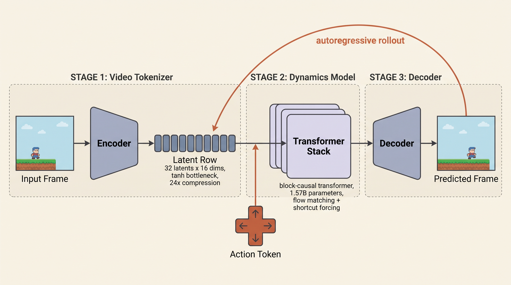
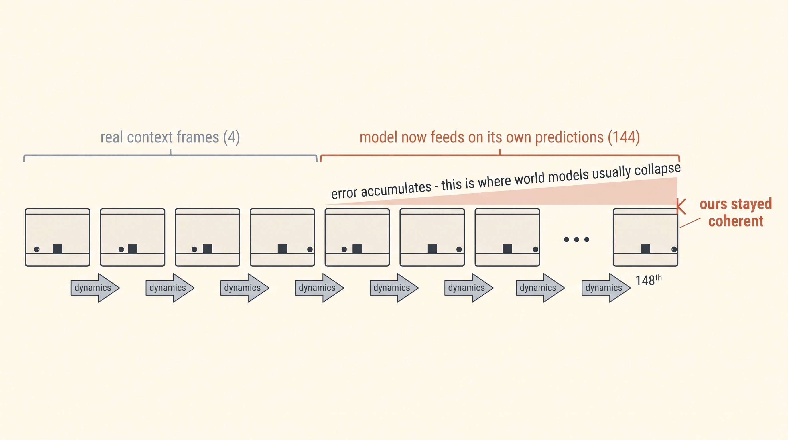
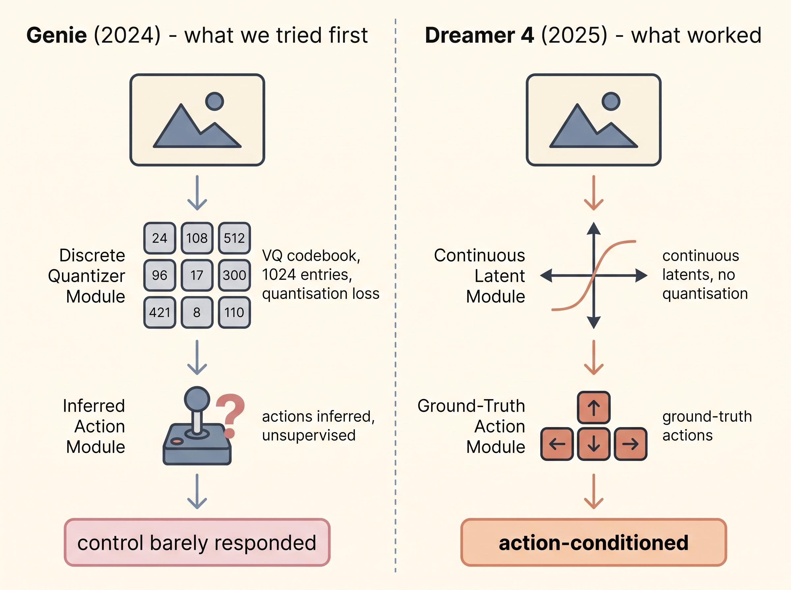
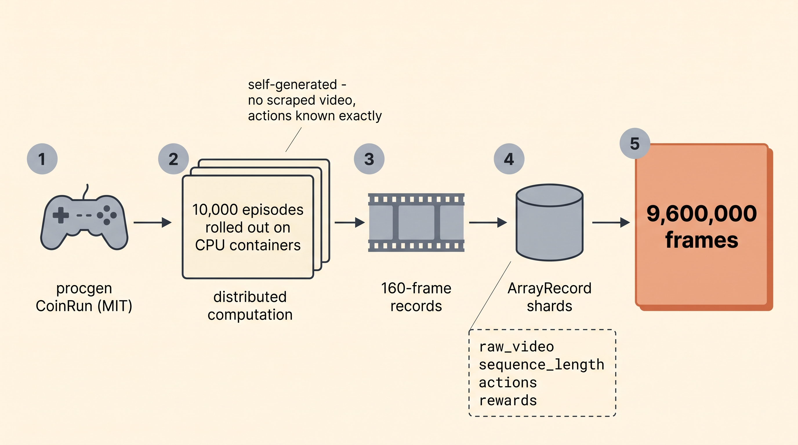
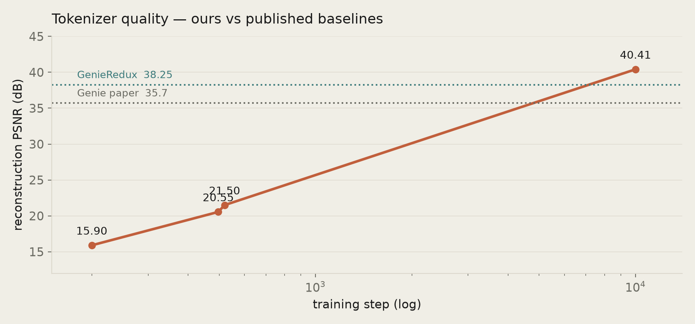
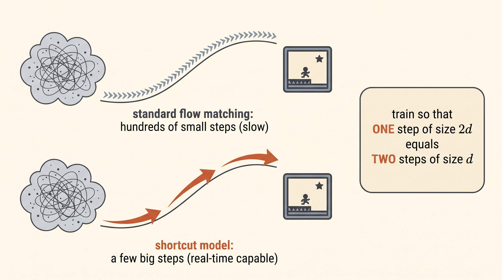
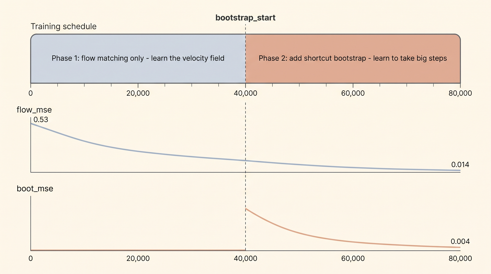
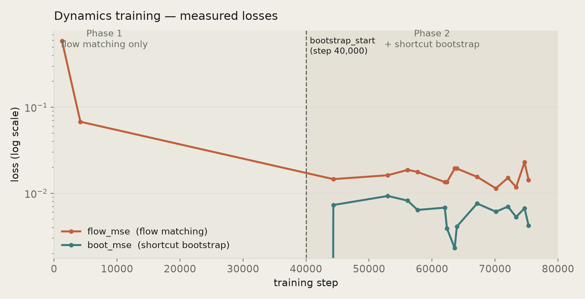
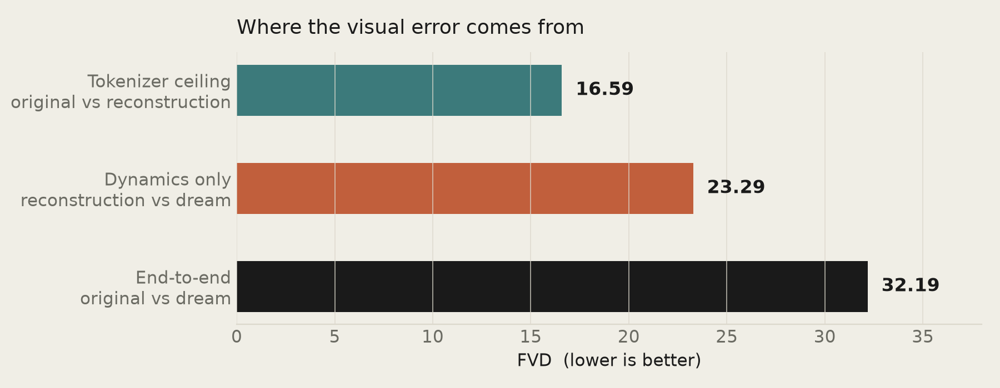

How we built it
The long version — every design decision, every number, and every thing that broke. Roughly a fifteen-minute read.
Contents
1 · What a world model actually is
A world model is a neural network that has learned to be a game engine. You give it the current frame and a button press; it gives you the next frame. Do that repeatedly — feeding each prediction back in as the new input — and you get a video you can steer. There is no physics code, no collision detection, no sprite sheet. Every pixel is a prediction.

The technical name for running the model forward like this is a rollout, and it is where the difficulty lives. One-step prediction is easy: the model always sees a real frame as context during training. In a rollout it sees its own output, which contains small errors, which push it slightly off the distribution it was trained on, where its predictions get slightly worse. That feedback loop is called compounding error, and it is the standard way world models fail — not with a crash, but by slowly dissolving into mush.

2 · Attempt one, and why it failed
Our first world model followed Genie (DeepMind, 2024), built on the open GenieRedux reimplementation. It trained. It produced things that looked vaguely like a platformer. It was also close to unusable, for two reasons that turned out to be structural rather than bad luck.
The controls did nothing. Genie's headline idea is that it learns its action vocabulary without labels — it watches unlabelled video and infers a small set of discrete actions. That is elegant, and it is what lets Genie train on internet video. But at our scale the model simply learned to ignore the action channel. We measured this with ΔPSNR — generate once with the true action, once with a different action, and see how much the futures differ. We got approximately zero. Pressing a key changed nothing.
It ran at about one frame per second. Genie's dynamics model is MaskGIT, which fills in a frame's tokens over roughly 25 refinement passes. Twenty-five forward passes per frame is not a tuning problem you can optimise away; getting to real time would have been a separate research project in distillation.
Two structural problems, not two bugs. That is what sent us looking for a different method.
3 · Choosing Dreamer 4
We switched to Dreamer 4 (Hafner, Yan & Lillicrap, 2025), using the Open Dreamer JAX implementation by Diego Marti Monso, Francesco Sacco and Edward Hu. It differs from Genie at essentially every layer, and each difference maps onto one of our problems.

Continuous latents instead of discrete codes. Genie's tokenizer is a VQ-VAE: each frame becomes a grid of integers drawn from a codebook of 1,024. Dreamer 4's tokenizer has no codebook at all — it is a masked autoencoder that projects to a low-dimensional bottleneck and squeezes it through a tanh. Nothing is quantised, so nothing is lost to rounding.
Real actions instead of inferred ones. The dynamics model takes the actual action as an input embedding. This sounds like a step backwards — it means you need action-labelled data, which is exactly what Genie was designed to avoid. But we generate our own data, so we know every action for free. Giving up Genie's core advantage cost us nothing and bought us control.
Flow matching with shortcut forcing instead of MaskGIT. This is the one that solves speed, and it deserves its own section.
4 · The data engine
Our first dataset was 122,000 frames. The recipe we were now following assumes roughly ten million. We had been training on about one percent of the intended data — which, in hindsight, explains more of attempt one's weakness than the architecture did.

We rebuilt it around OpenAI's procgen CoinRun (MIT licensed), fanned out across many CPU containers on Modal. Ten thousand episodes survived the length filter out of about 31,000 attempted, chunked into 160-frame records: 9,600,000 training frames, plus 480,000 each for validation and test. Every record carries the frames, the action taken at each step, and the reward.
Two details matter more than they look. First, we generate rather than scrape — there is no copyright question anywhere in this project, and we get perfect action labels as a side effect. Second, the loader does reward-biased sampling: half the training windows are deliberately chosen to contain a moment where the agent reached a coin. Without that, most random 64-frame windows of a random policy are just aimless wandering.
5 · Stage one — the tokenizer
The tokenizer is trained first and then frozen. Its only job is to compress a frame into latents and reconstruct it faithfully. Everything downstream inherits its ceiling: the dynamics model can never produce a sharper frame than the tokenizer can decode.
The one real judgement call here was how many latents per frame. Open Dreamer's default is 512, but that number is sized for Minecraft at 360×640, which is about 920 patches per frame. CoinRun at 64×64 with patch size 8 has only 64 patches. Using 512 latents would have been an eightfold expansion rather than a compression, and would have inflated the dynamics model too, since its token count scales with the number of latents. We used 32 — a 24× compression, and divisible by the dynamics model's packing factor of 2.

It reached PSNR 40.41, with LPIPS at 0.0015 — perceptually near-lossless. For reference, GenieRedux reports 38.25 on CoinRun and the Genie paper reports 35.7. Those are not perfectly like-for-like comparisons, but it is comfortably in the right range, and the reconstructions show crisp platforms, sprites and distinct level art styles.
6 · Stage two — dynamics and shortcut forcing
The dynamics model is the world model proper: a block-causal transformer that takes the latents of past frames plus the action, and predicts the next frame's latents. Ours is about 1.57 billion parameters.
It is trained with flow matching — instead of classifying discrete tokens, it learns a velocity field that transports noise into data. Sampling normally means integrating that field in many small steps, which is slow. Shortcut models (Frans, Hafner, Levine & Abbeel) fix this by conditioning the network on the step size as well as the noise level, and training a self-consistency rule:
One step of size 2d must land where two steps of size d land.

The consequence is that few-step generation is learned inside the same training run. There is no separate distillation phase, which is precisely the project we would have had to undertake with Genie. The schedule is two-phase: pure flow matching first, so the model learns the field, then the bootstrap objective is switched on so it learns to take big jumps along it.

bootstrap_start it also learns to take big steps — that second
phase is what buys few-step, real-time-capable generation.We ran 80,000 steps with the switch at 40,000. That is a rescaling of the published 200k/100k schedule, and it was forced by a hard constraint: Modal caps a single job at 24 hours, and we measured about 1.05 iterations per second. At 200,000 steps we would have hit the wall at roughly step 90,000 — before ever reaching the bootstrap phase, and therefore without the one capability we changed architectures to get. Halving the schedule preserved the phase structure within the budget.

7 · Five things that broke
Open Dreamer's write-up describes CoinRun as its single-GPU starting point. In practice that path does not run end to end as shipped. We hit five distinct breakages, all found by reading source rather than guessing:
- Their CoinRun generator crashes. It passes serialization_format="pickle" to a ShardWriter whose constructor takes no such argument.
- Writer and reader disagree. That writer emits msgpack; the CoinRun reader calls pickle.loads. The pickle path was lost in a refactor. We wrote records in the schema the reader actually parses.
- No CoinRun tokenization script. Theirs hardcodes the Minecraft transform. We routed around it — the dynamics trainer supports raw video and encodes on the fly.
- The dynamics trainer asserts the Minecraft action space. CoinRun is 0 binary / 16 categorical, so it fails immediately. The model itself is generic; the assert was a stale guard.
- The evaluation script cannot write its own videos. It calls imageio's pyav plugin, which their dependencies do not include.
Alongside those, the infrastructure produced its own lessons. The one worth repeating: putting jax[cuda12] on an nvidia/cuda base image makes JAX fail to find cuSPARSE and silently fall back to CPU. It does not error. It just runs about a hundred times slower. We caught it only because the smoke test asserted on jax.devices() instead of trusting that a GPU was requested.
8 · Measuring it honestly
We evaluated on the held-out test split: 64 rollouts, each given 4 real context frames and asked to generate 144 more. FVD compares distributions of video clips, and the useful thing is that it can be decomposed.

Of the 32.19 end-to-end score, roughly half comes from the tokenizer's reconstruction loss and half from the dynamics model's prediction error. Neither component is the sole bottleneck — which tells us where effort would go next: higher resolution improves the first term, more dynamics training or scale improves the second.
Visually, the rollouts hold together for the full 144 frames. Each level keeps its own art style, geometry stays valid, and nothing dissolves. They do not match the ground truth frame for frame — after 144 autoregressive steps from four real frames they are dreaming a plausible CoinRun level rather than replaying the recorded one. For a world model that is the expected and correct behaviour; the question is whether it stays coherent, and it does.
One thing we have not yet measured is controllability. Everything above shows the model simulates CoinRun well. It does not yet prove that pressing right makes the character go right — that requires the action-swap test, and until we run it we are not claiming the control problem is solved. It is the single most important number still outstanding.